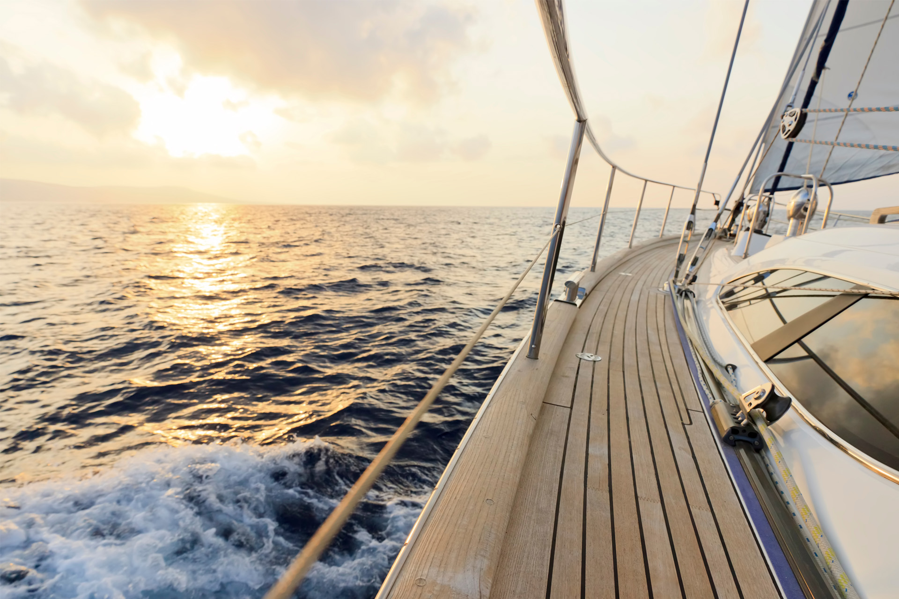
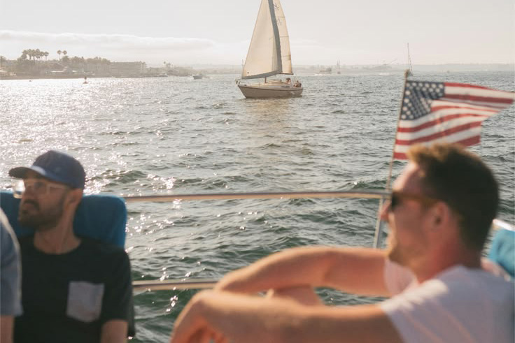
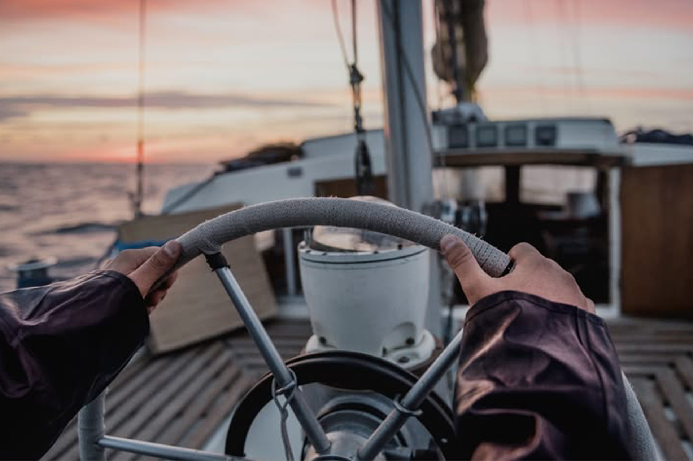
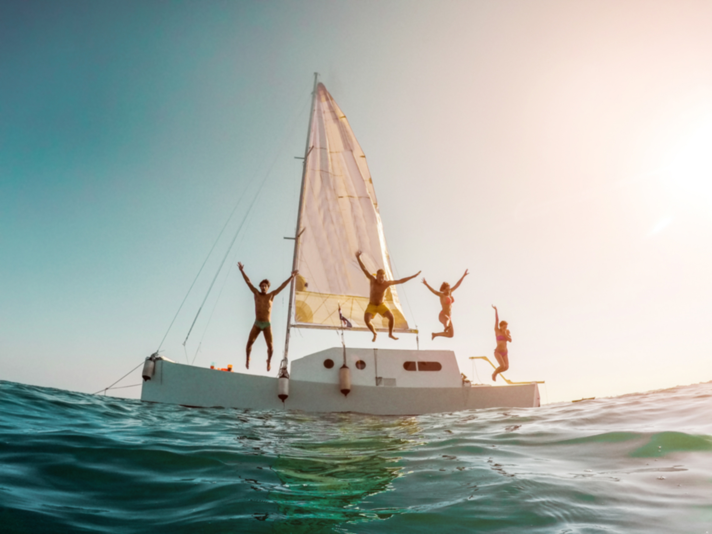

Crossing Open Water
Weeks spent crossing open water reveal a slower rhythm of living shaped by weather, routine, and the constant movement between unfamiliar coastlines and temporary harbors.

Subscribe to Our Newsletter
Sign up for Salt Air updates, travel notes, sailing stories, and reflections from life abroad.

Photo Gallery
Explore moments from sailing, coastal mornings, harbor towns, and life abroad.

Living Abroad
Adapting to unfamiliar places becomes part of everyday life when moving from one country to the next.

Harbor Towns
Small harbor towns offer temporary homes, local routines, and brief connections before the next departure.

Meeting People
Conversations with strangers along the journey often become the most memorable parts of living abroad.